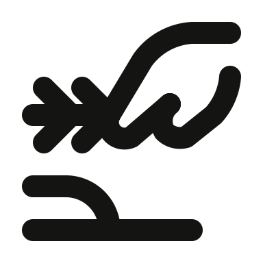
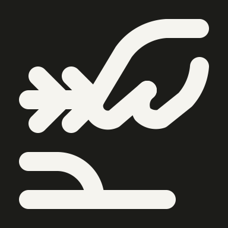

Original → rejected → revised. Worker thuan-mac; author gpt-6. Reviewed at native 48px in light and dark. All revisions use user-authorized drawing-bound exceptions; automatic findings are retained.
1. solo/hand-harvesting-grain
OriginalRejected

Revised · light

Revised · dark48px
done · Ready · gpt-6 · pass with exception
Rejected grain collapses into a three-pronged arrow and a baseline; the reference shows a pinching hand, grain ear and cultivated soil.
Restored two paired grain barbs, a pinching thumb/index silhouette and curved soil ridge.
Exception: The compact repeated grain barbs and pinch retain the harvesting action; 4px stroke and open hand remain legible. Automatic model: invalid; full gate: fail.
The rejected banknote uses a solid dot and the hand looks like a letter B; the reference has a distinct thumb across the bill and a wrist cuff.
Restored a tall bill with outlined denomination seal, horizontal thumb, cupped palm and cuff.
Exception: The note seal and thumb are necessary payment cues; compact thumb spacing is retained with clearly open negative space. Automatic model: invalid; full gate: fail.
The rejected drawing changes the reference’s right-side pinch into a generic hand under a vertical card.
Restored the landscape card and a right-side C-shaped grip, with index finger above and thumb in front.
Exception: The C-shaped pinch uses compact anatomical spacing to retain the reference action; card and thumb remain distinct at 48px. Automatic model: invalid; full gate: fail.
The rejected hand is reduced to a hook with two unrelated tails, and the gear center is a dot.
Restored a circular toothed gear with central hole and an enclosing pinch hand with continuous wrist.
Exception: Closely spaced gear teeth and gripping thumb preserve mechanical teamwork meaning; the hub and palm remain open. Automatic model: invalid; full gate: fail.
The rejected heart sits on the thumb with no breathing room, and the angular hand loses the reference’s extended palm.
Separated the rounded heart from the hand and restored the long thumb and rising supporting fingers.
Exception: The supporting hand retains a narrow but clear thumb opening; heart and hand are distinctly separated. Automatic model: invalid; full gate: fail.
The rejected mask’s eyes are short hooks and the hand is only an arrowlike elbow.
Restored two oval eye openings and a hand wrapping the lower mask edge, with a separate thumb and curled fingers.
Exception: Small eye openings and wrapping fingers are defining mask/hand cues; both holes remain visible at native size. Automatic model: invalid; full gate: fail.
The rejected duplicate mask also uses hook eyes and an abstract lower-left pointer instead of a grip.
Restored the theatrical mask oval eye openings and lower-edge grip while preserving this icon’s ID.
Exception: Small eye openings and wrapping fingers are defining mask/hand cues; both holes remain visible at native size. Automatic model: invalid; full gate: fail.
The rejected wrench has a tiny U slot and the hand is reduced to parallel bars with dots.
Widened the open jaw and restored a curved thumb mound, wrapping finger edge, and visible handle end.
Exception: The open jaw and wrapped finger divisions take priority over uniform spacing; negative spaces remain visible. Automatic model: invalid; full gate: fail.
The rejected paper plane loses the long pointed nose and the hand becomes an angular block.
Restored a long horizontal paper-plane silhouette, diagonal fold, and pinching thumb with curled fingers.
Exception: Plane folds and the pinching thumb require compact spacing; the pointed nose and hand silhouette stay legible. Automatic model: invalid; full gate: fail.
The rejected rakhi loses its diagonal thread and the hand reads as a bent arrow.
Restored the diagonal bracelet thread through a round medallion and a closed hand with rounded fingers.
Exception: Rounded finger steps are necessary to show the bracelet being held; the circular ornament and diagonal string are clear. Automatic model: invalid; full gate: fail.
The rejected snake looks like a bird head above a hand and omits the coiled body and draped tail.
Rebuilt an oval snake head, smooth S-shaped body, coiled bend and hanging tail over an open supporting palm.
Exception: The coiled snake and draped tail require compact spacing; the silhouette is serpentine and distinct from the supporting hand. Automatic model: invalid; full gate: fail.
The rejected teaspoon shows a round bowl and disconnected hooked hand; the reference has an oval bowl and a pinching grip.
Restored an oval spoon bowl, diagonal handle, opposing index finger and thumb, and continuous wrist edges.
Exception: Opposing fingers and an oval spoon preserve the original action; compact grip spacing remains visually open. Automatic model: valid; full gate: fail.
The rejected wireless phone has a diagonal slash for a hand and only one pair of radio arcs.
Restored two pairs of radio waves, a phone screen with bottom bezel, and a wrapping hand with thumb and wrist.
Exception: The two radio-wave tiers and hand grip are necessary cues; their compact spacing is reviewed at native size. Automatic model: invalid; full gate: fail.
The rejected kiosk lacks menu controls and the incomplete hand is just a vertical U.
Restored the touchscreen controls, payment currency cue, pedestal, and complete raised index finger with palm.
Exception: Menu rows, currency and pointing finger must coexist on the kiosk; each remains legible with 4px stroke. Automatic model: invalid; full gate: fail.
The rejected dryer removes every airflow stroke, so the upper object reads as a lid over an abstract hand.
Restored the wall-dryer housing, two curved airflow streams, and an open cupped hand.
Exception: Airflow is essential for dryer meaning and needs closer vertical spacing; the two streams remain distinct from hand and housing. Automatic model: invalid; full gate: fail.
The rejected IV bag is squat like a bottle and the stem looks like a stand rather than a tube into the hand.
Restored an elongated hanging IV bag, open hanger loop and curved tubing entering the receiving hand.
Exception: Compact fluid bag fittings and the receiving hand preserve the transfusion action; bag, tube and palm remain distinguishable. Automatic model: invalid; full gate: fail.